8 Aufgaben
Um mit dem Anlegen und Verwalten von Aufgaben zu beginnen, wählen Sie in der Kategorie Kommunikation & Organisation das Untermodul Aufgaben aus.
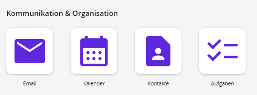
Nachdem Sie das Modul geöffnet haben, werden die zuletzt erstellten Aufgaben aufgelistet. Bei der ersten Verwendung ist diese Liste noch leer. Sie können Ihre Aufgaben nach Dringlichkeit, Status, Fälligkeitstermin, Betreff und Priorität sowie alphabetisch auf- und absteigend sortieren (3-Punkte-Schaltfläche).
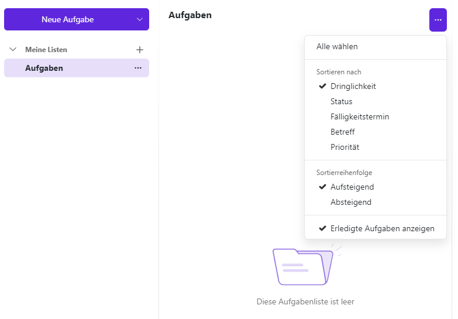
Die Aufgaben-Werkzeugleiste enthält verschiedene Funktionen zum Hinzufügen, Bearbeiten und Verwalten von Aufgaben. Sie haben hier folgende Möglichkeiten:
- neue Aufgaben anlegen
- Aufgaben bearbeiten
- das Fälligkeitsdatum einer Aufgabe ändern
- Aufgaben als erledigt markieren
- ausgewählte Aufgaben löschen
- persönliche Ordner anzeigen lassen
- neue Ordner hinzufügen
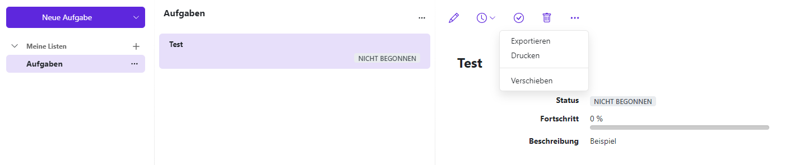
8.1 Aufgaben anzeigen
Erfahren Sie, wie die Aufgaben eines Aufgabenordners auf unterschiedliche Weise angezeigt werden können.
Öffnen Sie zuerst in der Ordneransicht einen Aufgabenordner. Klicken Sie danach in der Liste auf eine Aufgabe. Genauere Angaben zur Aufgabe werden in der Detailansicht angezeigt.

8.1.1 Optionen
- Möchten Sie die Liste der Aufgaben sortieren oder nur unerledigte Aufgaben anzeigen lassen, klicken Sie rechts über der Liste auf die 3-Punkte-Schaltfläche
- Mit einem Doppelklick auf eine Aufgabe in der Liste wird diese in einem neuen Fenster geöffnet
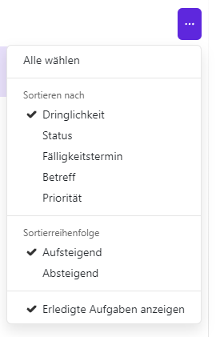
8.2 Neue Aufgaben anlegen
Über die Menüleiste im Aufgabenbereich können Sie eine neue Aufgabe anlegen. Klicken Sie hierzu in der Werkzeugleiste auf Neue Aufgabe.
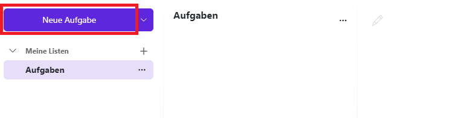
Es öffnet sich ein neues Fenster. Jetzt können Sie einen Betreff und bei Bedarf auch eine nähere Beschreibung eingeben.
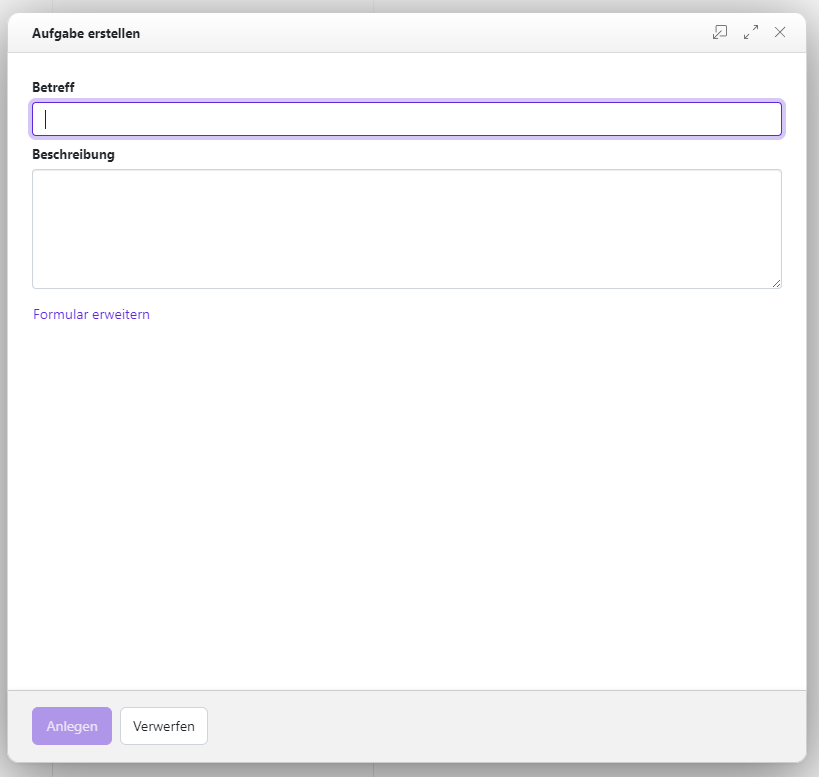
Klicken Sie auf Anlegen um Ihre Aufgabe zu speichern.
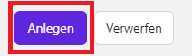
8.2.1 Erinnerung für die Aufgabe einrichten
Sie können beim Anlegen einer Aufgabe auch eine Erinnerung für diese Aufgabe einrichten. Folgen Sie dazu den ersten Schritten unter Neue Aufgaben anlegen, klicken Sie jedoch noch nicht auf Anlegen. Klicken Sie stattdessen unten auf Formular erweitern und klappen dann das Dropdown-Menü unter Erinnerung aus. Hier könen Sie wählen, wann die Erinnerung für Ihre Aufgabe kommen soll.


Wenn Sie Manuelle Eingabe auswählen, können Sie bei Datum für Erinnerung selbst festlegen, wann die Erinnerung genau kommen soll. Geben Sie ein Datum und eine Uhrzeit ein und klicken Sie abschließend auf Anlegen.
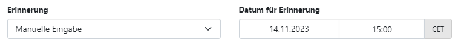
8.2.2 Status einer Aufgabe einstellen
Im Fenster Aufgabe erstellen haben Sie die Möglichkeit, den Status Ihrer erstellten Aufgabe zu ändern. Klicken Sie dazu, falls noch nicht geschehen, auf Formular erweitern und navigieren zu Status.
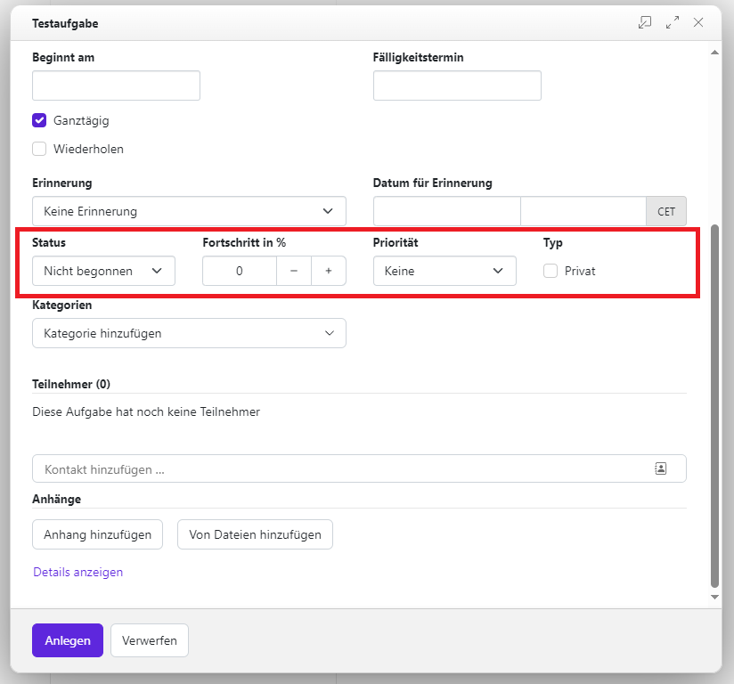
Hier können Sie auswählen, welchen Status Ihre Aufgabe erhalten soll. Wählen Sie hierfür einen passenden Status aus dem Dropdown-Menü:
- Nicht begonnen
- In Bearbeitung
- Erledigt
- Warten
- Verschoben
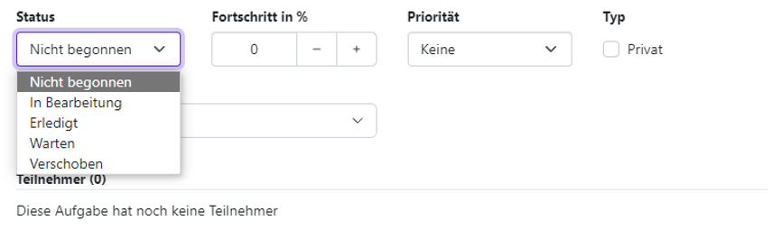
Sie können auch angeben, wie weit Ihre Aufgabe bereits fortgeschritten ist. Wählen Sie hierzu bei Fortschritt in % über die Plus- und Minusschaltflächen den passenden Prozentsatz aus.
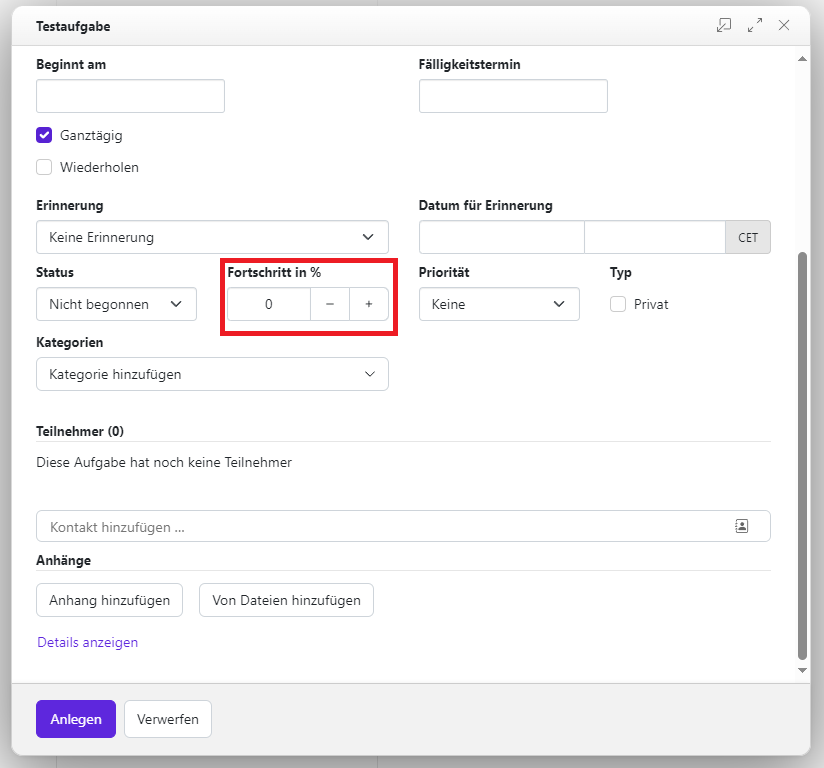
8.2.3 Priorität einer Aufgabe einstellen
Sie können einer Aufgabe eine Priorität zuweisen. Dies können Sie gleich beim Anlegen der Aufgabe im Fenster Aufgabe erstellen erledigen. Möchten Sie hingegen für eine bestehende Aufgabe die Priorität einstellen, so wählen Sie die Aufgabe in der Liste aus und klicken oben in der Menüleiste auf Bearbeiten.
Klicken Sie danach in beiden Fällen, falls noch nicht geschehen, auf Formular erweitern. Rechts neben den Statuseinstellungen können Sie das Menü Priorität aufrufen und die gewünschte Priorität auswählen.
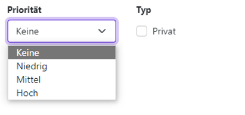
8.2.4 Sichtbarkeit einer Aufgabe einstellen
Sie können auswählen, ob eine Aufgabe für andere Teilnehmerinnen und Teilnehmer sichtbar sein soll. Dies können Sie gleich beim Anlegen der Aufgabe im Fenster Aufgabe erstellen erledigen. Möchten Sie hingegen für eine bestehende Aufgabe die Priorität einstellen, so wählen Sie die Aufgabe in der Liste aus und klicken oben in der Menüleiste auf Aufgabe bearbeiten.
Klicken Sie danach in beiden Fällen, falls noch nicht geschehen, auf Formular erweitern. Rechts neben Status und Priorität können Sie unter Typ die Aufgabe als Privat markieren. So können andere Teilnehmerinnen und Teilnehmer Ihre Aufgabe nicht sehen. Lassen Sie den Haken hingegen weg, wenn Sie möchten, dass Ihre Aufgabe für andere sichtbar ist.
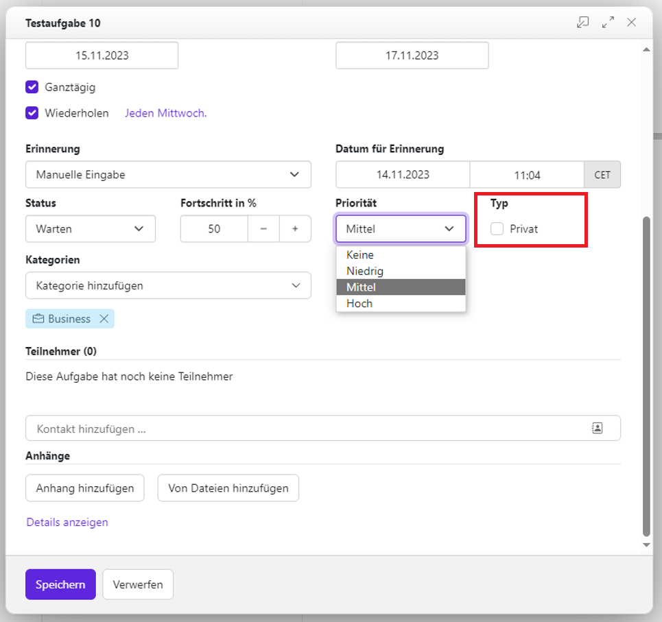
8.2.5 Mitglieder einer Aufgabe hinzufügen
Sie haben die Möglichkeit, Teilnehmerinnen und Teilnehmer zu einer von Ihnen erstellten Aufgabe hinzuzufügen oder aus ihr zu entfernen.
Wählen Sie die Aufgabe aus, zu der Sie Teilnehmerinnen und Teilnehmer hinzufügen möchten, und klicken Sie in der Menüleiste auf Aufgabe bearbeiten . Alternativ können Sie diese Einstellung auch bereits beim Anlegen der Aufgabe vornehmen.
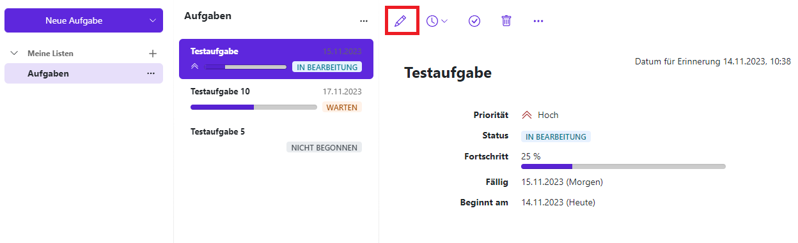
Es öffnet sich ein neues Fenster mit Betreff und Beschreibung Ihrer Aufgabe. Klicken Sie hier auf Formular erweitern, um weitere Eigenschaften anzuzueigen. Sie müssen ein wenig nach unten scrollen, um zum Teilnehmerinnen- und Teilnehmerbereich zu gelangen.
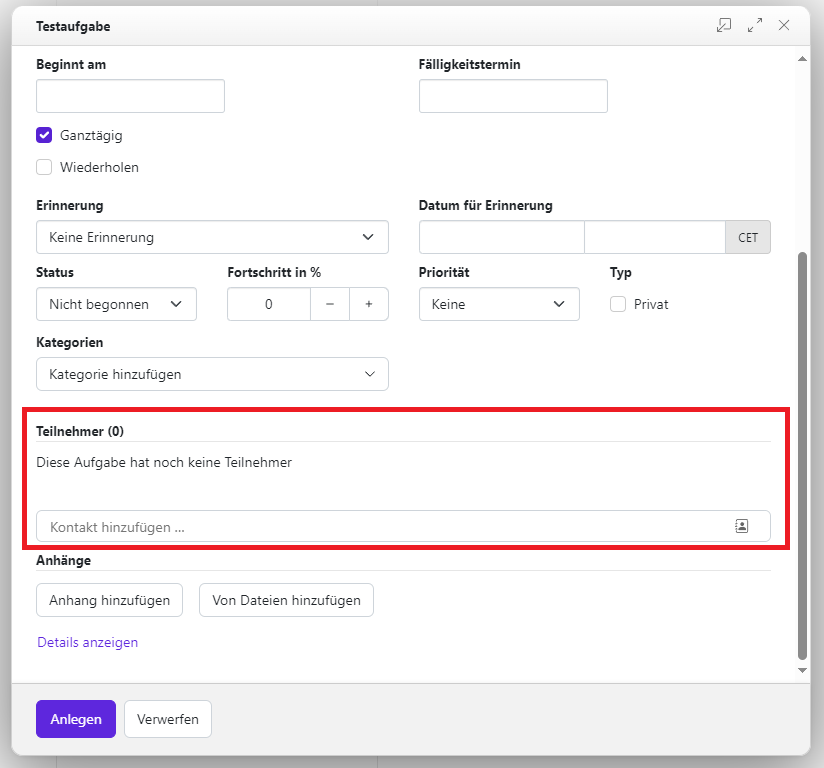
Sie können Kontakte hinzufügen, indem Sie einen Namen in die Suchleiste Kontakte hinzufügen eingeben. Je genauer Sie den Namen eingeben, desto schneller finden Sie den Kontakt. Wenn Sie den gewünschten Kontakt gefunden haben, klicken Sie ihn an und er wird automatisch zu Ihrer Aufgabe hinzugefügt. Wiederholen Sie diesen Vorgang, bis Sie alle gewünschten Kontakte hinzugefügt haben.
Hinweis: Wenn Sie nur einen Teil des vollständigen Namens eingeben oder mehrere Personen denselben Namen haben, kann es passieren, dass Ihnen mehrere Vorschläge angezeigt werden. Achten Sie in diesem Fall darauf, dass Sie die richtige Person auswählen.
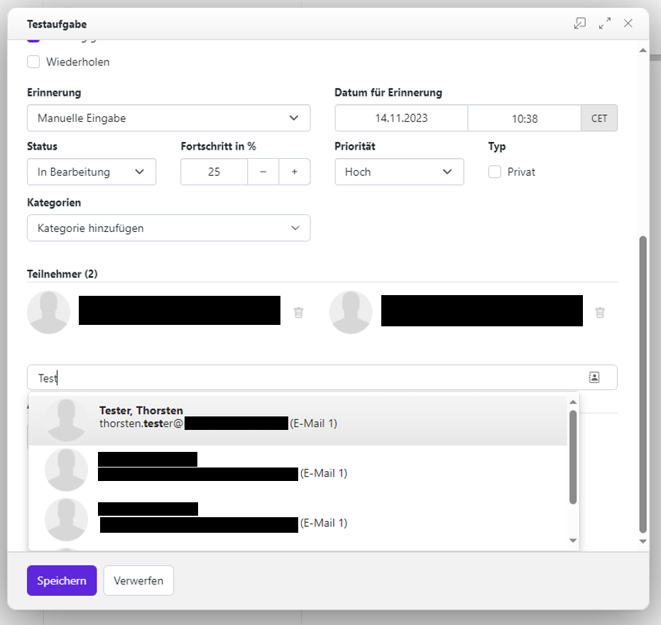
Möchten Sie die Zuweisung eines Kontaktes zu Ihrer Aufgabe aufheben, klicken Sie auf das Papierkorb-Symbol neben dem Kontakt. Wiederholen Sie diesen Vorgang, bis alle gewünschten Kontakte aus der Aufgabe gelöscht sind.
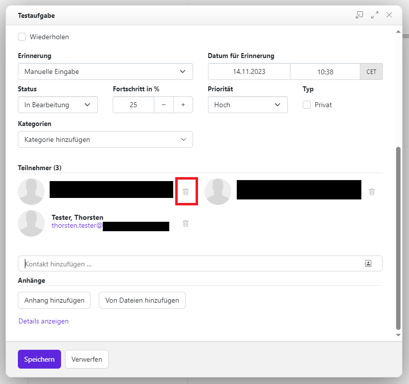
Klicken Sie auf Speichern, wenn Sie mit der Bearbeitung der Aufgabe fertig sind.
Wenn Sie zu einer Aufgabe eingeladen wurdesn, erhälten Sie eine Benachrichtigung, in der Sie die Aufgabe ablehnen oder bestätigen können. Es öffnet sich ein Fenster, indem Sie die Aufgabe ablehnen, als vielleicht markieren oder bestätigen und in dem Sie einen Kommentar hinzufügen können. Wenn Sie diese ablehnen, verschwindet die Benachrichtigung und es passiert nichts. Wenn Sie sie aber bestätigen oder als vielleicht markieren, erscheint die Aufgabe in Ihrem Aufgabenbereich.
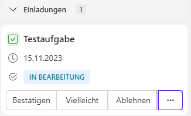
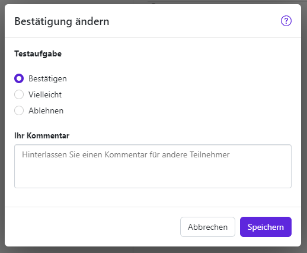
Hinweis: Wenn Sie die Aufgabe slebst erstellt haben, erhalten Sie keine Bestätigungs- oder Ablehnungsbenachrichtigung, sonder nur eine Erinnerung. Diese kann zeitlich verzögert bei Ihnen ankommen.